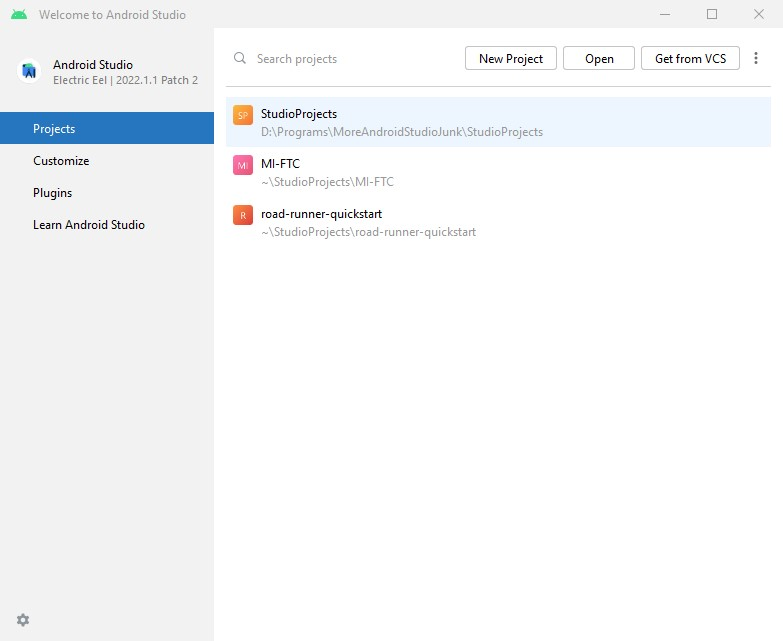

There's only a couple important things to know to start writing and testing code for FTC.
Last updated 7-21-23When you first open Android Studio, you will be greeted with a welcome screen:
If this installation has never been used before, it might have three large square buttons instead. This installation has had three projects created in it, which are displayed in a list. Above that list is a search box and three buttons - New Project, Open, and Get from VCS. For FTC, it is unlikely we will use New Project because we need to write our code inside the FtcRobotController project.
FtcRobotController is found at https://github.com/FIRST-Tech-Challenge/FtcRobotController. There are three ways to get the project into Studio:
Your code appears in the large textbox to the right. The large menu to the left of it is the Projects pane. This is one of many panes you can select from the small strip to the far left. Double-clicking a file will open it as a new tab in the editing box. Tabs appear as a small strip immediately above this box. As with most text editors, [Ctrl]+[S] will save all open files.
The IDE can provide some level of code-completion. When you start typing something, the IDE will search for terms in your code, the FtcRobotController SDK, or the Java standard library that might complete what you are typing, and it will pop up a list of these terms. You can use the up and down arrow keys to select the correct term, then either press [Tab] to insert it or [Ctrl]+[.] to insert it with a dot afterward.
To build your code onto the robot, we will use the section of the toolbar outlined in red above. Connect a Control Hub with a USB-C cable to a Windows computer with the REV Hardware Client installed, wait for the device to show up in the middle dropdown box (open the dropdown and select it if necessary, and sometimes it won't show up until you open the dropdown), then click the green Run button to the right of this dropdown to build the code onto the Control Hub. When a small green "Launch Succeeded" notification appears in the bottom-left of the Studio window, then it is safe to unplug the Control Hub.
The default "Android" ("Project" for stock IDEA) view in the Project pane is a convenient display of your project files, but it is not the actual file tree. Occasionally you will need to see the actual files for one reason or another. To do this, click the dropdown in the far upper-left of the Project pane that currently says "Android", and change it to "Project Files" instead.